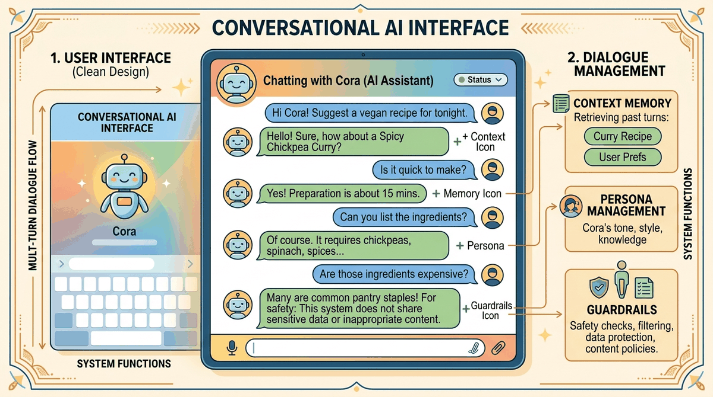

Conversational AI is arguably the most visible application of large language models. From customer support chatbots to AI companions, creative writing partners, and voice assistants, the ability to sustain coherent, context-aware, multi-turn dialogue is central to how people interact with language models in practice. Building great conversational systems requires far more than calling an API; it demands careful architectural decisions about dialogue state, memory, persona consistency, and graceful handling of conversation breakdowns. The synthetic data techniques from Chapter 12 can help generate training examples for these specialized behaviors.
This module covers the complete stack for building conversational AI. It begins with dialogue system architecture, contrasting task-oriented, open-domain, and hybrid approaches. It then explores persona design for companionship and creative writing applications, followed by memory and context management techniques that allow conversations to span sessions and retain important information over time. The module also addresses multi-turn dialogue patterns including clarification, correction, topic switching, and fallback strategies. Finally, it covers voice and multimodal interfaces that bring conversational AI beyond text.
By the end of this module, you will be able to design dialogue architectures for different use cases, implement persistent memory systems, build persona-consistent chatbots, manage complex multi-turn conversation flows, and integrate speech and vision capabilities into conversational applications, all while respecting safety and ethical guardrails.
Who: A conversational AI team at a mid-size European bank serving 2.3 million retail customers.
Situation: They launched a customer service chatbot using a simple sliding-window context approach, keeping only the last 10 turns of conversation.
Problem: Users who began by stating "I want to dispute a charge on my Visa ending in 4821" would find that, 12 turns later, the bot asked: "Which card are you referring to?" Dialogue state was being silently evicted from the context window.
Dilemma: Expanding the window to 30 turns raised latency to 4.2 seconds per response and tripled API costs. Keeping 10 turns meant losing critical information.
Decision: They implemented a structured dialogue state tracker that extracted and persisted key entities (card number, dispute amount, transaction date) in a side store, injecting them as a compact JSON preamble at each turn.
How: Entity extraction ran as a lightweight classifier on each user turn. Extracted slots were stored in a session database and injected before the conversation history, consuming only 120 tokens regardless of conversation length.
Result: "Amnesia" complaints dropped 94%. Average resolution time fell from 8.1 turns to 5.3 turns, and API cost per conversation decreased 22% because fewer clarification loops were needed.
Lesson: Raw conversation history is not the same as dialogue state. Separating persistent entity slots from ephemeral turn history solves the memory problem far more efficiently than simply widening the context window. For approaches that pull relevant facts from external stores, see Chapter 19 on RAG.
Who: A startup building an AI companion app targeting creative writers, with 180,000 monthly active users.
Situation: Their signature feature was "Hemingway Mode," a persona designed to respond in short, declarative sentences with a stoic tone. The system prompt was 300 tokens of persona instructions.
Problem: After 25+ turns, users noticed "Hemingway" would gradually shift into flowery, verbose prose. By turn 40, the persona was unrecognizable. Internal testing confirmed persona drift in 67% of long sessions.
Dilemma: Repeating the full persona prompt every turn was expensive. Summarizing earlier turns stripped away the stylistic examples that anchored the persona.
Decision: They adopted a "persona anchor" pattern: a condensed 80-token persona reminder injected every 10 turns, combined with a style-consistency classifier that flagged drift and triggered a full persona re-injection when confidence dropped below 0.7.
How: The style classifier was a fine-tuned DistilBERT model (67M parameters) trained on 5,000 labeled Hemingway-style vs. non-Hemingway responses. It ran locally with sub-10ms latency.
Result: Persona consistency at turn 40 improved from 33% to 91%. Users spent 40% more time in long sessions, and "Hemingway Mode" became the app's most-shared feature.
Lesson: Persona instructions at the start of a conversation are necessary but not sufficient. Long conversations require periodic re-anchoring, and automated drift detection (informed by alignment techniques) makes the system self-correcting.
A chatbot without memory is like a goldfish at a cocktail party: endlessly charming in three-second bursts, but every introduction feels like the first. "Hi, I'm your AI assistant!" it says for the forty-seventh time, as the user quietly contemplates switching to a spreadsheet.
Who: An engineering team at a telehealth platform processing 12,000 patient calls per day.
Situation: They deployed a voice-based conversational AI to handle appointment scheduling, using Whisper for speech-to-text and a GPT-4 backbone for dialogue management.
Problem: Patients often paused mid-sentence to think, cough, or consult a calendar. The system interpreted silences longer than 1.5 seconds as end-of-turn signals, generating responses that interrupted patients and created confused, overlapping exchanges. Complaint rates hit 23%.
Dilemma: Increasing the silence threshold to 4 seconds made the bot feel sluggish and unresponsive. Keeping it at 1.5 seconds produced constant interruptions.
Decision: They implemented an adaptive endpointing model that used acoustic cues (falling intonation, completed syntactic phrases) alongside silence duration to decide when a turn was complete.
How: A small transformer classifier trained on 8,000 labeled turn-boundary examples from real calls predicted turn completion probability every 200ms. The system waited for both silence (1.0s minimum) and high turn-completion confidence (above 0.85).
Result: Interruption rate dropped from 23% to 4%. Patient satisfaction scores rose from 3.4 to 4.5 out of 5. Average call duration actually decreased by 15% because fewer repair sequences were needed.
Lesson: Voice conversational AI requires turn-taking intelligence that goes beyond simple silence detection. Acoustic and linguistic signals together produce far more natural interactions than any fixed timeout threshold.
The first chatbot, ELIZA (1966), convinced some users it truly understood them by simply reflecting their statements back as questions. Sixty years and billions of parameters later, the most common user complaint about AI chatbots is still: "It does not actually understand me." Progress is a spiral staircase.
Who: A conversational commerce team at a major food delivery platform operating in 14 countries.
Situation: Their ordering chatbot handled simple requests well ("Order me a large pepperoni pizza") but collapsed on multi-turn modifications: "Actually, make it medium. And add mushrooms. Oh wait, can you split that into two orders?"
Problem: The bot treated each turn independently, so "make it medium" without explicit reference to "the pizza" produced a confused response asking what the user wanted to make medium. Cart abandonment during multi-turn orders was 61%.
Dilemma: Building rigid, rule-based dialogue trees for every possible modification sequence was estimated at 6 months of engineering. Relying purely on the LLM to track state produced inconsistent results.
Decision: They built a hybrid approach: structured order state (items, sizes, quantities, delivery address) maintained in a database, with the LLM responsible for natural language understanding and generation while a deterministic state machine validated and applied order mutations.
How: Each user turn was processed through two parallel paths: the LLM extracted intent and entities, while the state machine validated whether the proposed change was legal (e.g., "add anchovies" only if a pizza exists in the cart). Conflicts triggered clarification prompts.
Result: Multi-turn order completion rose from 39% to 84%. Average order value increased 18% because the bot could handle upsell conversations ("Would you like to add a drink?") without losing track of the existing order.
Lesson: Conversational AI for transactional tasks works best as a hybrid: let the LLM handle language and let structured state machines handle business logic. Neither approach alone matches the reliability of both working together. This pattern extends naturally into full agentic architectures where tool use and planning layers complement the dialogue system.
In the next section, Section 20.1: Dialogue System Architecture, we establish the core dialogue system architecture, examining how modern conversational systems process, understand, and respond.
Weizenbaum, J. (1966). "ELIZA: A Computer Program for the Study of Natural Language Communication Between Man and Machine." dl.acm.org
The original chatbot paper, demonstrating that simple pattern matching could create compelling (if illusory) conversational experiences.
Zhang, S., Dinan, E., Urbanek, J., et al. (2018). "Personalizing Dialogue Agents: I Have a Dog, Do You Have Pets Too?" arxiv.org/abs/1801.07243
Introduces the PersonaChat dataset and persona-conditioned dialogue, establishing methods for building chatbots with consistent personalities.
Packer, C., Wooders, S., Lin, K., Fang, V., Patil, S.G., Stoica, I., & Gonzalez, J.E. (2023). "MemGPT: Towards LLMs as Operating Systems." arxiv.org/abs/2310.08560
Proposes a virtual memory system for LLMs that manages context windows like an OS manages RAM, enabling persistent long-term conversational memory.
Radford, A., Kim, J.W., Xu, T., Brockman, G., McLeavey, C., & Sutskever, I. (2022). "Robust Speech Recognition via Large-Scale Weak Supervision." (Whisper) arxiv.org/abs/2212.04356
Introduces OpenAI's Whisper model for speech-to-text, trained on 680,000 hours of multilingual audio, forming the backbone of voice conversational AI.
Roller, S., Dinan, E., Goyal, N., et al. (2020). "Recipes for Building an Open-Domain Chatbot." arxiv.org/abs/2004.13637
Meta's comprehensive study of what makes open-domain chatbots engaging, covering model scale, decoding strategies, persona, and human evaluation methods.
Thoppilan, R., De Freitas, D., Hall, J., et al. (2022). "LaMDA: Language Models for Dialog Applications." arxiv.org/abs/2201.08239
Google's dialogue-focused LLM paper, introducing safety and groundedness metrics alongside quality for evaluating conversational AI systems.
Jurafsky, D. & Martin, J.H. (2024). Speech and Language Processing. 3rd ed. (draft). web.stanford.edu/~jurafsky/slp3
The standard NLP textbook, with chapters on dialogue systems, conversational agents, and speech recognition covering both classical and neural approaches.
McTear, M. (2020). Conversational AI: Dialogue Systems, Conversational Agents, and Chatbots. Morgan & Claypool. morganclaypool.com
Comprehensive survey of conversational AI architectures, from task-oriented dialogue systems to open-domain chatbots and voice interfaces.
LiveKit Agents. github.com/livekit/agents
Open-source framework for building real-time voice AI agents, with support for STT, TTS, and LLM integration over WebRTC.
Pipecat (Daily). github.com/pipecat-ai/pipecat
Framework for building voice and multimodal conversational AI pipelines, with modular processors for speech, text, and vision.
Rasa. github.com/RasaHQ/rasa
Open-source conversational AI platform for building task-oriented dialogue systems, with built-in NLU, dialogue management, and integration connectors.
Letta (formerly MemGPT). github.com/letta-ai/letta
Framework for building stateful LLM agents with persistent memory, implementing the MemGPT architecture for long-running conversational applications.